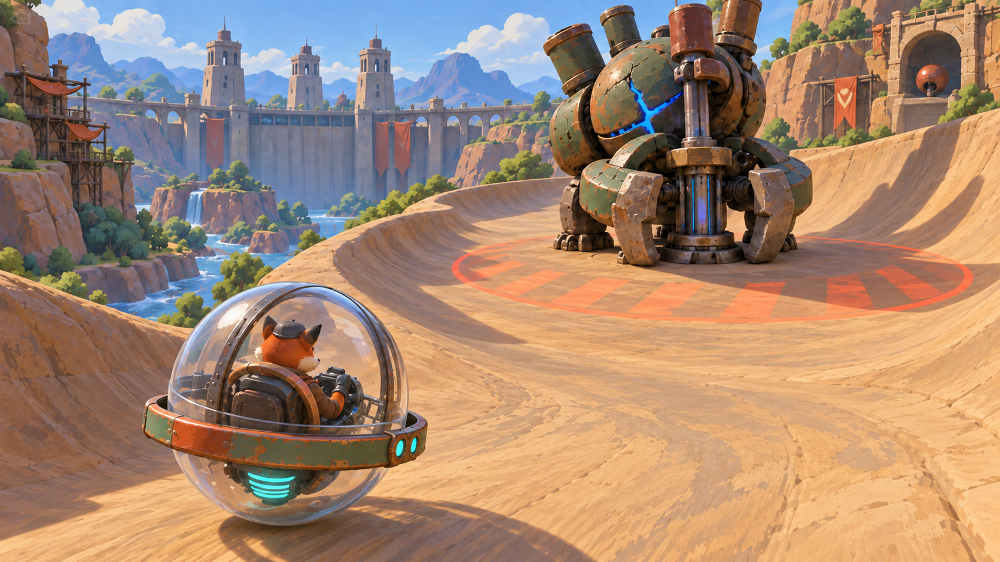

Scrapkeep · Visual development · Original comparison
Style A selected. Alternatives preserved.
Compare how the game could look. The camera, pilot, terrain and Warden stay in the same composition. These are generated concepts, not game screenshots.

A · Painted workshop miniature
Tactile enamel, broad painted wear and soft material transitions. Recommended for workshop warmth and scenic depth. Open full image
Switch with the buttons or keys 1, 2 and 3. The controls preview the original alternatives. Andrew has already selected A.
What you are choosing
The rendering style: material richness, shape simplification and edge treatment. A is softer and tactile. B is graphic and outlined. C has stronger faceted surfaces.
What still needs work
The escape route needs a complete readable continuation, the threat marker needs the game's exact pattern, and moving gyro rings need animation proof. This choice does not approve those details or establish FPS.